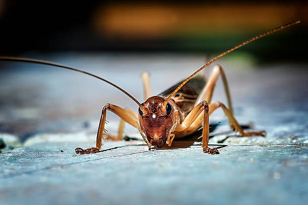

¿QUE SON LOS GRILLOS?
Un grillo es un insecto de color negro rojizo, con el cuerpo alargado de unos 3 cm, cabeza gruesa y redonda, ojos
prominentes, seis patas (las posteriores adaptadas para saltar) y alas protegidas por unas
placas duras denominadas élitros; vive en huecos excavados en la tierra, en zonas cálidas o templadas; el macho
produce, rozando sus élitros entre sí, un sonido agudo y monótono, especialmente en verano durante las primeras
horas de la noche.
Los gríllidos (Gryllidae) son una familia de insectos ortópteros de la superfamilia Grylloidea, dentro del suborden
Ensifera. A esta familia pertenecen insectos conocidos vulgarmente como grillos. Son, por lo general, insectos de
color marrón a negro, con hábitos nocturnos. Algunas especies se encuentran en las casas, los grillos domésticos,
por ejemplo Acheta domesticus y Gryllus bimaculatus en zonas templadas y Gryllodes supplicans o Gryllodes sigillatus
en zonas tropicales.

Los grillos viven en casi cualquier entorno: bosques, pastizales, humedales, cuevas, playas y bajo tierra. Los grillos, al igual que otros animales, harán su hogar dondequiera que puedan encontrar comida, agua, aire, refugio y espacio.